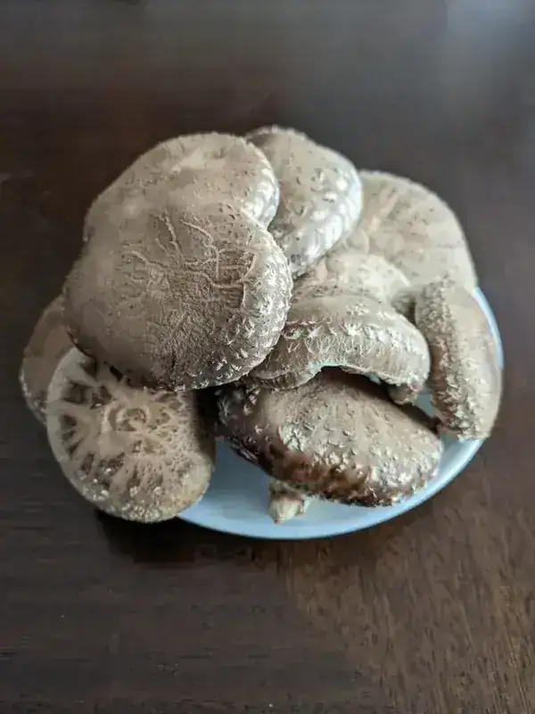

Fresh Organic Oak Log Shiitake Mushrooms: A Taste of the Forest
$25.00 – $250.00
Hand-harvested for peak umami, these woodland treasures deliver an unrivaled depth of flavor and earthiness.
- Harvested at their peak for maximum flavor and freshness
- Large, meaty caps with thick, flavorful stems
- Rich in umami, vitamins, and minerals
- Perfect for grilling, sauteing, roasting, or adding to soups and stews